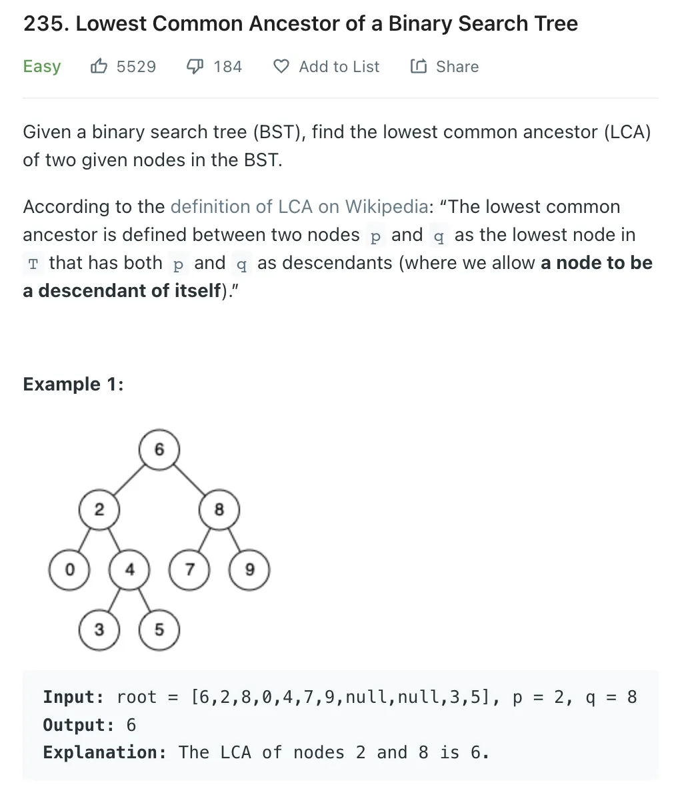
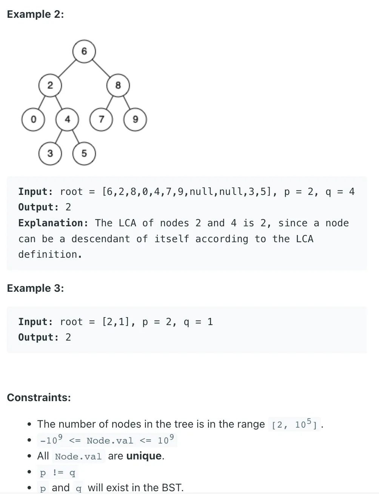

235. Lowest Common Ancestor of a Binary Search Tree
Question


✍🏽 My Solution - Iterative
Runtime: 4 ms, faster than 100.00% of Java online submissions for Lowest Common Ancestor of a Binary Search Tree. Memory Usage: 43 MB, less than 95.21% of Java online submissions for Lowest Common Ancestor of a Binary Search Tree.
class Solution {
public TreeNode lowestCommonAncestor(TreeNode root, TreeNode p, TreeNode q) {
while (true) {
if (p.val < root.val && q.val < root.val) {
root = root.left;
} else if (p.val > root.val && q.val > root.val) {
root = root.right;
} else {
return root;
}
}
}
}
🧠 Thought Process
- Why did I choose this particular implementation?
- 參考王爭，非遞歸實現
- 建立一個 cur 指向樹的根節點
- 如果 p 跟 q 的值都小於 cur，代表 p跟q都在左子樹
- 如果 p 跟 q 的值都大於 cur，代表 p跟q都在右子樹
- 如果 一個節點值小於 cur，一個節點值大於 cur，說明他們一個在根節點的左子樹，一個在根節點的右子樹，代表該節點 cur 就是最近的公共祖先節點
- What is the time/space complexity of my solution? How do I know?
- time : O(logn)
- space: O(1)
Solution #1 [王爭-遞歸]
Runtime: 5 ms, faster than 87.23% of Java online submissions for Lowest Common Ancestor of a Binary Search Tree.
Memory Usage: 49.8 MB, less than 52.32% of Java online submissions for Lowest Common Ancestor of a Binary Search Tree.
class Solution {
public TreeNode lowestCommonAncestor(TreeNode root, TreeNode p, TreeNode q) {
if (p == root || q == root) {
return root;
}
if (p.val < root.val && q.val < root.val) {
return lowestCommonAncestor(root.left, p, q);
} else if (p.val > root.val && q.val > root.val) {
return lowestCommonAncestor(root.right, p, q);
} else {
return root;
}
}
}
func lowestCommonAncestor(root, p, q *TreeNode) *TreeNode {
if p == root || q == root {
return root
}
if p.Val < root.Val && q.Val < root.Val {
return lowestCommonAncestor(root.Left, p, q)
}
if p.Val > root.Val && q.Val > root.Val {
return lowestCommonAncestor(root.Right, p, q)
}
return root
}
Explanation (in my words)
- How does their solution work?
- 遞歸實現
- What is the space/time complexity of their solution?
- time: O(h)
- space: O(h)